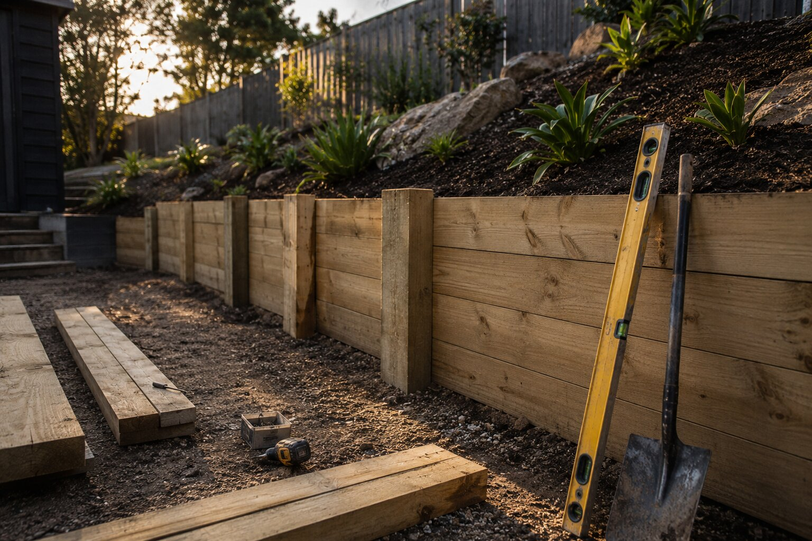

Mornington Peninsula
Premium retaining walls and fencing for coastal and hillside properties that need practical, weather-ready solutions suited to Victoria's coastal conditions.
Whether the brief is structural support, outdoor transformation or full site preparation — we bring the planning and workmanship to make the project feel premium from day one.
Good retaining work starts beneath the surface — drainage, support and careful setup from the ground up.
We focus on the visual result as much as the practical outcome — every line and surface matters.
Better sequencing, better coordination and a much smoother handover for everyone involved.
Ideal for demanding sites where strength, longevity and a refined finish all matter. Built for load, drainage and clean modern lines that hold their form for decades.
Sites with significant height differentials, heavy soil movement, or where structural certification is required. Also ideal when a contemporary poured-concrete look is the design brief.
Typical applications
Residential boundary walls • Driveway retaining • Commercial site works • Development cut and fill • High-load structural retention
Properties wanting a structured, modern look with strong durability. Ideal for medium to high walls where clean horizontal lines and low maintenance are key priorities.
Typical applications
Garden terracing • Front yard retaining • Sloped block management • Pool surrounds • Residential rear yard boundaries
A modern and highly popular retaining choice — strong visual discipline, excellent structural performance and a finish that ages beautifully in Victoria's conditions.
A natural solution for garden edges, tiered yards and residential projects that benefit from warmth, texture and a softer, organic aesthetic that blends into the surroundings.

A retaining wall project is often the right time to install or replace fencing. We supply and install quality fencing that complements the wall work and finishes the property boundary properly.
Handling fencing alongside retaining work keeps the project coordinated, avoids double-handling and ensures posts and footings are positioned correctly relative to the wall structure. One team, one handover.
Typical applications
Boundary fencing • Side fence replacement • Pool enclosures • Gate installations • Privacy screens • New subdivision fencing
We work across the Mornington Peninsula, Melbourne, Geelong and Greater Melbourne — bringing the right construction approach to each site type, access condition and drainage challenge.
Premium retaining walls and fencing for coastal and hillside properties that need practical, weather-ready solutions suited to Victoria's coastal conditions.
Residential and commercial retaining, excavation and site works tailored to tighter access, dense urban lots and the demanding expectations of inner-city clients.
Durable retaining systems and outdoor improvements for growing suburbs, sloping blocks and new-build projects across the Geelong and Surf Coast region.
Flexible delivery across the wider Melbourne metro and regional Victoria for homeowners, builders and property managers who need a dependable specialist.
We'll help you choose the most effective approach and then deliver it with the level of detail the property deserves.